Analisis Clustering Data Kualitas Udara Menggunakan Ekstraksi Fitur TSFEL dengan Perbandingan Interpolasi Linear dan Polynomial#
Pada tugas ini dilakukan pengolahan data kualitas udara dari tiga jenis polutan, yaitu Carbon Monoxide (CO), Nitrogen Dioxide (NO₂), dan Sulfur Dioxide (SO₂). Data awal yang digunakan masih memiliki jumlah pengamatan yang berbeda serta terdapat missing value dan outlier.
Tahapan pengolahan data dilakukan untuk mempersiapkan data sebelum digunakan pada proses ekstraksi fitur dan analisis clustering. Data yang memiliki missing value dan outlier terlebih dahulu ditangani menggunakan metode interpolasi. Dalam tugas ini digunakan dua pendekatan interpolasi, yaitu interpolasi Linear dan interpolasi Polynomial. Kedua metode tersebut diproses secara terpisah sehingga menghasilkan dua dataset hasil preprocessing yang nantinya dapat digunakan sebagai dua eksperimen.
Setelah preprocessing selesai, data dari ketiga polutan pada masing-masing metode digabungkan berdasarkan tanggal. Selanjutnya dilakukan ekstraksi fitur menggunakan TSFEL. Dari setiap polutan diekstraksi sebanyak 68 fitur sehingga dari tiga polutan diperoleh:
68 fitur × 3 polutan = 204 fitur.
Hasil ekstraksi fitur dari metode Linear dan Polynomial selanjutnya digunakan sebagai dasar untuk tahap analisis berikutnya, yaitu reduksi dimensi, clustering, evaluasi menggunakan Silhouette Coefficient, dan visualisasi hasil clustering pada peta.
1. Import Library#
Tahap pertama adalah mempersiapkan library yang dibutuhkan selama proses pengolahan dan analisis data. Library yang digunakan mencakup library untuk membaca dan mengolah data, melakukan perhitungan numerik, visualisasi, reduksi dimensi, clustering, serta evaluasi hasil clustering.
import pandas as pd
import numpy as np
import matplotlib.pyplot as plt
from scipy import stats
from sklearn.preprocessing import StandardScaler
from sklearn.decomposition import PCA
from sklearn.cluster import KMeans
from sklearn.metrics import silhouette_score
import warnings
warnings.filterwarnings('ignore')
2. Membaca dan Melihat Struktur Data#
Data awal terdiri dari tiga dataset kualitas udara, yaitu CO, NO₂, dan SO₂. Ketiga data tersebut masih disimpan dalam file yang terpisah. Oleh karena itu, masing-masing file perlu dibaca terlebih dahulu untuk mengetahui struktur dan jumlah data yang tersedia.
Sebelum melakukan preprocessing, struktur data perlu diperiksa terlebih dahulu. Pemeriksaan dilakukan untuk mengetahui contoh isi data serta memastikan nama kolom yang digunakan sudah sesuai.
co = pd.read_csv(r'..\data\csv\CO-Kedungpring.csv')
no2 = pd.read_csv(r'..\data\csv\NO2-Kedungpring.csv')
so2 = pd.read_csv(r'..\data\csv\SO2-Kedungpring.csv')
print("CO :", co.shape)
print("NO2:", no2.shape)
print("SO2:", so2.shape)
display(co.head())
display(no2.head())
display(so2.head())
print("Kolom CO :", co.columns.tolist())
print("Kolom NO2:", no2.columns.tolist())
print("Kolom SO2:", so2.columns.tolist())
CO : (205, 2)
NO2: (169, 2)
SO2: (221, 2)
| date | CO | |
|---|---|---|
| 0 | 2025-09-01 | 0.028042 |
| 1 | 2025-09-02 | 0.026509 |
| 2 | 2025-09-03 | 0.025827 |
| 3 | 2025-09-04 | 0.032963 |
| 4 | 2025-09-06 | 0.029518 |
| date | NO2 | |
|---|---|---|
| 0 | 2025-08-31 | 0.000036 |
| 1 | 2025-09-01 | 0.000020 |
| 2 | 2025-09-03 | 0.000013 |
| 3 | 2025-09-05 | 0.000029 |
| 4 | 2025-09-11 | 0.000030 |
| date | SO2 | |
|---|---|---|
| 0 | 2025-08-31 | 0.000066 |
| 1 | 2025-09-01 | 0.000237 |
| 2 | 2025-09-03 | -0.000250 |
| 3 | 2025-09-04 | 0.000002 |
| 4 | 2025-09-05 | -0.000122 |
Kolom CO : ['date', 'CO']
Kolom NO2: ['date', 'NO2']
Kolom SO2: ['date', 'SO2']
Hasil pembacaan menunjukkan bahwa jumlah baris pada masing-masing dataset belum sama. Hal ini menunjukkan bahwa data ketiga polutan belum berada pada rentang pengamatan yang seragam sehingga diperlukan proses penyamaan tanggal pada tahap berikutnya.
Dari pemeriksaan Struktur data diketahui bahwa setiap dataset memiliki kolom date sebagai tanggal pengamatan dan satu kolom yang berisi nilai polutan masing-masing, yaitu CO, NO2, dan SO2.
3.Persiapan dan Penyamaan Data berdasarkan Tanggal#
Sebelum melakukan preprocessing, seluruh data polutan perlu dipersiapkan agar memiliki format tanggal yang seragam dan rentang pengamatan yang sama. Kolom date pada data CO, NO₂, dan SO₂ terlebih dahulu diubah menjadi format datetime. Setelah itu, data disusun berdasarkan tanggal dan dibuat rentang tanggal lengkap dari 31 Agustus 2025 sampai 31 Agustus 2026, sehingga diperoleh 366 tanggal pengamatan. Selanjutnya, masing-masing dataset disesuaikan dengan rentang tanggal tersebut menggunakan reindex(). Proses ini membuat ketiga polutan memiliki jumlah baris dan tanggal yang sama. Tanggal yang sebelumnya tidak memiliki data akan menghasilkan nilai NaN dan nantinya ditangani pada tahap interpolasi.
co['date'] = pd.to_datetime(co['date'])
no2['date'] = pd.to_datetime(no2['date'])
so2['date'] = pd.to_datetime(so2['date'])
print(co['date'].dtype)
print(no2['date'].dtype)
print(so2['date'].dtype)
datetime64[ns]
datetime64[ns]
datetime64[ns]
tanggal_lengkap = pd.date_range(
start='2025-08-31',
end='2026-08-31',
freq='D'
)
print("Jumlah tanggal:", len(tanggal_lengkap))
Jumlah tanggal: 366
co_365 = co_clean.copy()
co_365['date'] = pd.to_datetime(co_365['date'])
co_365 = co_365.set_index('date')
co_365 = co_365.reindex(tanggal_lengkap)
co_365.index.name = 'date'
co_365 = co_365.reset_index()
print("Jumlah baris CO:", len(co_365))
no2_365 = no2_clean.copy()
no2_365['date'] = pd.to_datetime(no2_365['date'])
no2_365 = no2_365.set_index('date')
no2_365 = no2_365.reindex(tanggal_lengkap)
no2_365.index.name = 'date'
no2_365 = no2_365.reset_index()
print("Jumlah baris NO2:", len(no2_365))
so2_365 = so2_clean.copy()
so2_365['date'] = pd.to_datetime(so2_365['date'])
so2_365 = so2_365.set_index('date')
so2_365 = so2_365.reindex(tanggal_lengkap)
so2_365.index.name = 'date'
so2_365 = so2_365.reset_index()
print("Jumlah baris SO2:", len(so2_365))
Jumlah baris CO: 366
Jumlah baris NO2: 366
Jumlah baris SO2: 366
Setelah proses ini, ketiga dataset memiliki 366 baris dengan rentang tanggal yang sama. Nilai NaN yang muncul berasal dari tanggal yang tidak memiliki data pengukuran dan akan diproses pada tahap interpolasi Linear dan Polynomial.
4. Pengecekan Missing Value#
Setelah proses ini, ketiga dataset memiliki 366 baris dengan rentang tanggal yang sama. Nilai NaN yang muncul berasal dari tanggal yang tidak memiliki data pengukuran dan akan diproses pada tahap interpolasi Linear dan Polynomial.
print("CO :", co_365['CO'].isna().sum())
print("NO2:", no2_365['NO2'].isna().sum())
print("SO2:", so2_365['SO2'].isna().sum())
CO : 162
NO2: 197
SO2: 157
Hasil pengecekan menunjukkan bahwa masih terdapat nilai NaN pada ketiga polutan. Nilai tersebut tidak langsung dihapus karena penghapusan data akan mengurangi jumlah pengamatan. Oleh karena itu, missing value ditangani menggunakan metode interpolasi
5. Preprocessing dengan Interpolasi Linear#
Pada eksperimen pertama digunakan interpolasi Linear untuk memperkirakan nilai yang hilang. Metode ini memperkirakan nilai berdasarkan hubungan linear antara nilai yang tersedia di sekitar posisi missing value.
Hasil preprocessing Linear disimpan secara terpisah agar dapat digunakan sebagai dataset eksperimen pertama.
Setelah interpolasi Linear, nilai yang kosong diestimasi berdasarkan pola nilai yang tersedia. Dataset ini menjadi hasil preprocessing Linear dan akan digunakan sebagai eksperimen pertama.
# INTERPOLASI LINEAR
co_linear = co_365.copy()
no2_linear = no2_365.copy()
so2_linear = so2_365.copy()
co_linear = co_linear.set_index('date')
no2_linear = no2_linear.set_index('date')
so2_linear = so2_linear.set_index('date')
co_linear['CO'] = co_linear['CO'].interpolate(
method='linear',
limit_direction='both'
)
no2_linear['NO2'] = no2_linear['NO2'].interpolate(
method='linear',
limit_direction='both'
)
so2_linear['SO2'] = so2_linear['SO2'].interpolate(
method='linear',
limit_direction='both'
)
co_linear = co_linear.reset_index()
no2_linear = no2_linear.reset_index()
so2_linear = so2_linear.reset_index()
6. Preprocessing dengan Interpolasi Polynomial#
Setelah interpolasi Linear, nilai yang kosong diestimasi berdasarkan pola nilai yang tersedia. Dataset ini menjadi hasil preprocessing Linear dan akan digunakan sebagai eksperimen pertama.
Hasilnya menjadi dataset preprocessing Polynomial. Dataset ini tetap dipisahkan dari hasil Linear karena nantinya kedua metode akan menjadi dua eksperimen yang dibandingkan.
# INTERPOLASI POLYNOMIAL
co_polynomial = co_365.copy()
no2_polynomial = no2_365.copy()
so2_polynomial = so2_365.copy()
co_polynomial = co_polynomial.set_index('date')
no2_polynomial = no2_polynomial.set_index('date')
so2_polynomial = so2_polynomial.set_index('date')
co_polynomial['CO'] = co_polynomial['CO'].interpolate(
method='polynomial',
order=2,
limit_direction='both'
)
no2_polynomial['NO2'] = no2_polynomial['NO2'].interpolate(
method='polynomial',
order=2,
limit_direction='both'
)
so2_polynomial['SO2'] = so2_polynomial['SO2'].interpolate(
method='polynomial',
order=2,
limit_direction='both'
)
co_polynomial = co_polynomial.reset_index()
no2_polynomial = no2_polynomial.reset_index()
so2_polynomial = so2_polynomial.reset_index()
7. Menangin NaN pada Ujung Data#
Pada kondisi tertentu, interpolasi Polynomial masih dapat meninggalkan nilai NaN, terutama apabila missing value berada pada bagian paling awal atau paling akhir data. Oleh karena itu digunakan fungsi tambahan untuk memperkirakan nilai tersebut menggunakan beberapa data valid terdekat dengan model Polynomial orde 2.
import numpy as np
from sklearn.preprocessing import PolynomialFeatures
from sklearn.linear_model import LinearRegression
def isi_nan_ujung_polynomial(data, kolom, jumlah_data=5, order=2):
data = data.copy()
indeks_nan = data[data[kolom].isna()].index
for idx in indeks_nan:
# =========================
# NaN berada di awal data
# =========================
if idx == data.index.min():
data_valid = data.loc[idx+1:, kolom].dropna().head(jumlah_data)
if len(data_valid) >= order + 1:
X = np.arange(len(data_valid)).reshape(-1, 1)
y = data_valid.values
poly = PolynomialFeatures(degree=order)
X_poly = poly.fit_transform(X)
model = LinearRegression()
model.fit(X_poly, y)
# Prediksi posisi sebelum data pertama
X_pred = np.array([[-1]])
X_pred_poly = poly.transform(X_pred)
hasil = model.predict(X_pred_poly)[0]
data.loc[idx, kolom] = hasil
# =========================
# NaN berada di akhir data
# =========================
else:
data_valid = data.loc[:idx-1, kolom].dropna().tail(jumlah_data)
if len(data_valid) >= order + 1:
X = np.arange(len(data_valid)).reshape(-1, 1)
y = data_valid.values
poly = PolynomialFeatures(degree=order)
X_poly = poly.fit_transform(X)
model = LinearRegression()
model.fit(X_poly, y)
# Prediksi posisi setelah data terakhir
X_pred = np.array([[len(data_valid)]])
X_pred_poly = poly.transform(X_pred)
hasil = model.predict(X_pred_poly)[0]
data.loc[idx, kolom] = hasil
return data
co_polynomial = isi_nan_ujung_polynomial(
co_polynomial,
'CO'
)
no2_polynomial = isi_nan_ujung_polynomial(
no2_polynomial,
'NO2'
)
so2_polynomial = isi_nan_ujung_polynomial(
so2_polynomial,
'SO2'
)
8. Validasi Hasil Preprocessing#
Setelah kedua metode interpolasi selesai, dilakukan pengecekan untuk memastikan bahwa jumlah data tetap 366 baris dan tidak terdapat missing value.
print("=== JUMLAH BARIS ===")
print("CO :", len(co_linear))
print("NO2:", len(no2_linear))
print("SO2:", len(so2_linear))
print("\n=== LINEAR ===")
print("CO :", co_linear['CO'].isna().sum())
print("NO2:", no2_linear['NO2'].isna().sum())
print("SO2:", so2_linear['SO2'].isna().sum())
print("\n=== POLYNOMIAL ===")
print("CO :", co_polynomial['CO'].isna().sum())
print("NO2:", no2_polynomial['NO2'].isna().sum())
print("SO2:", so2_polynomial['SO2'].isna().sum())
=== JUMLAH BARIS ===
CO : 366
NO2: 366
SO2: 366
=== LINEAR ===
CO : 0
NO2: 0
SO2: 0
=== POLYNOMIAL ===
CO : 0
NO2: 0
SO2: 0
9. Menggabungkan Tiga Polutan dan Menyimpan Hasil Preprocessing#
Setelah preprocessing selesai, ketiga polutan digabungkan berdasarkan kolom date. Penggabungan dilakukan di masing-masing metode, sehingga tidak mencampurkan hasil Linear dengan Polynomial.
Dengan demikian terdapat dua dataset:
Dataset gabungan hasil Linear
Dataset gabungan hasil Polynomial
Kedua dataset hasil preprocessing disimpan sebagai file CSV agar dapat digunakan kembali pada proses ekstraksi fitur.
data_linear = co_linear[['date', 'CO']].merge(
no2_linear[['date', 'NO2']],
on='date'
).merge(
so2_linear[['date', 'SO2']],
on='date'
)
data_polynomial = co_polynomial[['date', 'CO']].merge(
no2_polynomial[['date', 'NO2']],
on='date'
).merge(
so2_polynomial[['date', 'SO2']],
on='date'
)
print("Linear:", data_linear.shape)
print("Polynomial:", data_polynomial.shape)
data_linear.to_csv(
'../data/csv/Hasil_Preprocessing_Linear.csv',
index=False
)
data_polynomial.to_csv(
'../data/csv/Hasil_Preprocessing_Polynomial.csv',
index=False
)
Linear: (366, 4)
Polynomial: (366, 4)
11. Ekstraksi Fitur TSFEL#
Setelah preprocessing selesai, tahap berikutnya adalah ekstraksi fitur. Pada tahap ini digunakan library TSFEL (Time Series Feature Extraction Library) untuk mengambil karakteristik statistik dan karakteristik sinyal dari data polutan.
Pada tugas ini digunakan 68 fitur untuk setiap polutan. Karena terdapat tiga polutaN (CO,NO2,SO2) maka Jumlah Keseluruhan fitur 204.
Proses ini dilakukan 2 kali dengan menggunakan hasil preprocessing linear dan hasil preprocessing polynomial, Kedua dataset hasil ekstraksi fitur disimpan sebagai file CSV agar dapat digunakan kembali pada proses Clustering.
import pandas as pd
import numpy as np
import inspect
import tsfel.feature_extraction.features as tsfel_features
# ---------- 1. Muat 1 file CSV utama yang berisi semua polutan ----------
# Sesuaikan nama file jika berbeda (misal: 'mystorage/Kerek-Clean.csv')
df = pd.read_csv('../data/csv/Hasil_Preprocessing_Polynomial.csv')
df['date'] = pd.to_datetime(df['date'])
df = df.sort_values('date').reset_index(drop=True)
pollutants = ['NO2', 'SO2', 'CO']
fs = 1
# ---------- 2. Daftar PERSIS 68 fitur yang diminta ----------
FEATURE_LIST = """abs_energy auc autocorr average_power calc_centroid calc_max calc_mean
calc_median calc_min calc_std calc_var dfa distance ecdf ecdf_percentile ecdf_percentile_count
ecdf_slope entropy fundamental_frequency higuchi_fractal_dimension hist_mode human_range_energy
hurst_exponent interq_range kurtosis lempel_ziv lpcc max_frequency max_power_spectrum
maximum_fractal_length mean_abs_deviation mean_abs_diff mean_diff median_abs_deviation
median_abs_diff median_diff median_frequency mfcc mse negative_turning neighbourhood_peaks
petrosian_fractal_dimension pk_pk_distance positive_turning power_bandwidth rms skewness slope
spectral_centroid spectral_decrease spectral_distance spectral_entropy spectral_kurtosis
spectral_positive_turning spectral_roll_off spectral_roll_on spectral_skewness spectral_slope
spectral_spread spectral_variation spectrogram_mean_coeff sum_abs_diff wavelet_abs_mean
wavelet_energy wavelet_entropy wavelet_std wavelet_var zero_cross""".split()
print(f"Jumlah fitur per polutan: {len(FEATURE_LIST)}")
print(f"Total target fitur keseluruhan: {len(FEATURE_LIST) * len(pollutants)}")
def to_scalar(result):
if isinstance(result, dict) and "values" in result:
result = result["values"]
if isinstance(result, (list, tuple, np.ndarray)):
arr = np.asarray(result, dtype=float)
return float(np.nanmean(arr))
return float(result)
def extract_one(fn_name, signal, fs):
fn = getattr(tsfel_features, fn_name)
params = inspect.signature(fn).parameters
if "fs" in params:
result = fn(signal, fs)
else:
result = fn(signal)
return to_scalar(result)
# Dictionary untuk menampung seluruh hasil ekstraksi dari semua polutan
combined_row = {}
# ---------- 3. Looping untuk membersihkan dan mengekstraksi tiap polutan ----------
for pollutant in pollutants:
print(f"\n--- Memproses polutan: {pollutant} ---")
# Buat copy dataframe agar tidak saling menimpa
df_poly = df[['date', pollutant]].copy()
# Paksa kolom target jadi numerik
df_poly[pollutant] = pd.to_numeric(df_poly[pollutant], errors='coerce')
n_missing_before = df_poly[pollutant].isna().sum()
print(f"Jumlah NaN/non-numerik pada {pollutant}: {n_missing_before}")
# Handling outlier dengan IQR
Q1 = df_poly[pollutant].quantile(0.25)
Q3 = df_poly[pollutant].quantile(0.75)
IQR = Q3 - Q1
lower_bound = Q1 - 1.5 * IQR
upper_bound = Q3 + 1.5 * IQR
df_poly.loc[(df_poly[pollutant] < lower_bound) | (df_poly[pollutant] > upper_bound), pollutant] = np.nan
# Interpolasi waktu dan cleaning
df_clean = df_poly.set_index('date').interpolate(method='time').ffill().bfill()
signal_1d = df_clean[pollutant].astype(float).values
# Ekstraksi fitur dan beri prefix nama polutan (misal: NO2_abs_energy)
for fn_name in FEATURE_LIST:
feature_key = f"{pollutant}_{fn_name}"
combined_row[feature_key] = extract_one(fn_name, signal_1d, fs)
# ---------- 4. Simpan ke DataFrame final (1 baris, 204 kolom) ----------
extracted_features_final = pd.DataFrame([combined_row])
print(f"\nBerhasil! Total kolom akhir yang dihasilkan: {extracted_features_final.shape[1]}")
output_filename = '../data/features/Pollutants-Kedungpring-Polynomial-TSFEL.csv'
extracted_features_final.to_csv(output_filename, index=False)
print(f"File berhasil disimpan sebagai: {output_filename}")
Jumlah fitur per polutan: 68
Total target fitur keseluruhan: 204
--- Memproses polutan: NO2 ---
Jumlah NaN/non-numerik pada NO2: 0
--- Memproses polutan: SO2 ---
Jumlah NaN/non-numerik pada SO2: 0
--- Memproses polutan: CO ---
Jumlah NaN/non-numerik pada CO: 0
Berhasil! Total kolom akhir yang dihasilkan: 204
File berhasil disimpan sebagai: ../data/features/Pollutants-Kedungpring-Polynomial-TSFEL.csv
import pandas as pd
import numpy as np
import inspect
import tsfel.feature_extraction.features as tsfel_features
# ---------- 1. Muat 1 file CSV utama yang berisi semua polutan ----------
# Sesuaikan nama file jika berbeda (misal: 'mystorage/Kerek-Clean.csv')
df = pd.read_csv('../data/csv/Hasil_Preprocessing_Linear.csv')
df['date'] = pd.to_datetime(df['date'])
df = df.sort_values('date').reset_index(drop=True)
pollutants = ['NO2', 'SO2', 'CO']
fs = 1
# ---------- 2. Daftar PERSIS 68 fitur yang diminta ----------
FEATURE_LIST = """abs_energy auc autocorr average_power calc_centroid calc_max calc_mean
calc_median calc_min calc_std calc_var dfa distance ecdf ecdf_percentile ecdf_percentile_count
ecdf_slope entropy fundamental_frequency higuchi_fractal_dimension hist_mode human_range_energy
hurst_exponent interq_range kurtosis lempel_ziv lpcc max_frequency max_power_spectrum
maximum_fractal_length mean_abs_deviation mean_abs_diff mean_diff median_abs_deviation
median_abs_diff median_diff median_frequency mfcc mse negative_turning neighbourhood_peaks
petrosian_fractal_dimension pk_pk_distance positive_turning power_bandwidth rms skewness slope
spectral_centroid spectral_decrease spectral_distance spectral_entropy spectral_kurtosis
spectral_positive_turning spectral_roll_off spectral_roll_on spectral_skewness spectral_slope
spectral_spread spectral_variation spectrogram_mean_coeff sum_abs_diff wavelet_abs_mean
wavelet_energy wavelet_entropy wavelet_std wavelet_var zero_cross""".split()
print(f"Jumlah fitur per polutan: {len(FEATURE_LIST)}")
print(f"Total target fitur keseluruhan: {len(FEATURE_LIST) * len(pollutants)}")
def to_scalar(result):
if isinstance(result, dict) and "values" in result:
result = result["values"]
if isinstance(result, (list, tuple, np.ndarray)):
arr = np.asarray(result, dtype=float)
return float(np.nanmean(arr))
return float(result)
def extract_one(fn_name, signal, fs):
fn = getattr(tsfel_features, fn_name)
params = inspect.signature(fn).parameters
if "fs" in params:
result = fn(signal, fs)
else:
result = fn(signal)
return to_scalar(result)
# Dictionary untuk menampung seluruh hasil ekstraksi dari semua polutan
combined_row = {}
# ---------- 3. Looping untuk membersihkan dan mengekstraksi tiap polutan ----------
for pollutant in pollutants:
print(f"\n--- Memproses polutan: {pollutant} ---")
# Buat copy dataframe agar tidak saling menimpa
df_poly = df[['date', pollutant]].copy()
# Paksa kolom target jadi numerik
df_poly[pollutant] = pd.to_numeric(df_poly[pollutant], errors='coerce')
n_missing_before = df_poly[pollutant].isna().sum()
print(f"Jumlah NaN/non-numerik pada {pollutant}: {n_missing_before}")
# Handling outlier dengan IQR
Q1 = df_poly[pollutant].quantile(0.25)
Q3 = df_poly[pollutant].quantile(0.75)
IQR = Q3 - Q1
lower_bound = Q1 - 1.5 * IQR
upper_bound = Q3 + 1.5 * IQR
df_poly.loc[(df_poly[pollutant] < lower_bound) | (df_poly[pollutant] > upper_bound), pollutant] = np.nan
# Interpolasi waktu dan cleaning
df_clean = df_poly.set_index('date').interpolate(method='time').ffill().bfill()
signal_1d = df_clean[pollutant].astype(float).values
# Ekstraksi fitur dan beri prefix nama polutan (misal: NO2_abs_energy)
for fn_name in FEATURE_LIST:
feature_key = f"{pollutant}_{fn_name}"
combined_row[feature_key] = extract_one(fn_name, signal_1d, fs)
# ---------- 4. Simpan ke DataFrame final (1 baris, 204 kolom) ----------
extracted_features_final = pd.DataFrame([combined_row])
print(f"\nBerhasil! Total kolom akhir yang dihasilkan: {extracted_features_final.shape[1]}")
output_filename = '../data/features/Pollutants-Kedungpring-Linear-TSFEL.csv'
extracted_features_final.to_csv(output_filename, index=False)
print(f"File berhasil disimpan sebagai: {output_filename}")
Jumlah fitur per polutan: 68
Total target fitur keseluruhan: 204
--- Memproses polutan: NO2 ---
Jumlah NaN/non-numerik pada NO2: 0
--- Memproses polutan: SO2 ---
Jumlah NaN/non-numerik pada SO2: 0
--- Memproses polutan: CO ---
Jumlah NaN/non-numerik pada CO: 0
Berhasil! Total kolom akhir yang dihasilkan: 204
File berhasil disimpan sebagai: ../data/features/Pollutants-Kedungpring-Linear-TSFEL.csv
Kesimpulan#
Berdasarkan proses pengolahan data kualitas udara di wilayah Kedungpring, data konsentrasi CO, NO₂, dan SO₂ berhasil disiapkan dalam rentang 31 Agustus 2025 sampai 31 Agustus 2026 sehingga seluruh polutan memiliki 366 data harian yang seragam. Data yang memiliki nilai hilang akibat proses penyamaan tanggal kemudian ditangani menggunakan dua metode interpolasi, yaitu interpolasi linear dan interpolasi polynomial orde 2. Hasil validasi menunjukkan bahwa kedua metode berhasil menghasilkan data lengkap tanpa nilai NaN pada ketiga polutan.
Selanjutnya, data hasil interpolasi digabungkan berdasarkan tanggal dan digunakan sebagai input untuk ekstraksi fitur menggunakan TSFEL. Setiap polutan menghasilkan 68 fitur, sehingga diperoleh 204 fitur untuk masing-masing metode interpolasi. Dengan demikian, terdapat dua dataset fitur yang terpisah, yaitu dataset hasil interpolasi linear dan dataset hasil interpolasi polynomial, yang selanjutnya dapat digunakan untuk tahap reduksi dimensi, clustering, dan evaluasi silhouette.
Analisis Clustering mengguakan KNIME#
Alur KNIME
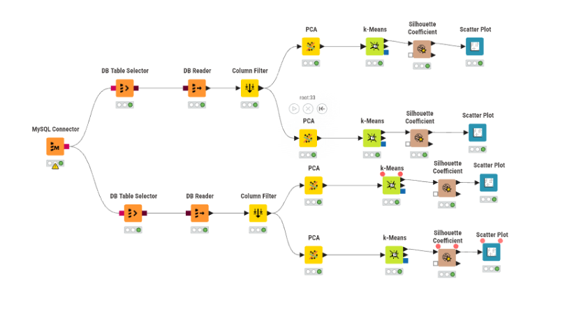
Analisis nilai K terbaik#
1. Linear#
Jumlah Cluster (K) |
Overall Mean Silhouette (linear) |
|---|---|
2 |
0,822 |
3 |
0,647 |
4 |
0,659 |
5 |
0,637 |
6 |
0,575 |
7 |
0,582 |
plot K=2
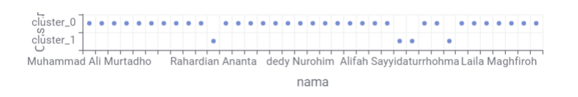
plot K=3
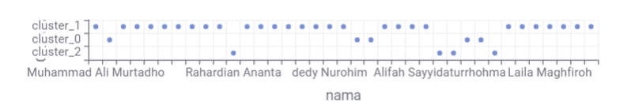
plot K=4
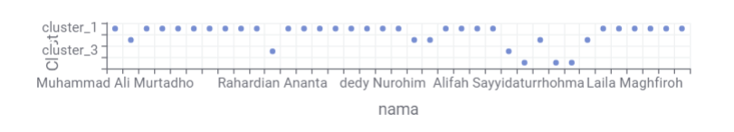
plot K=5
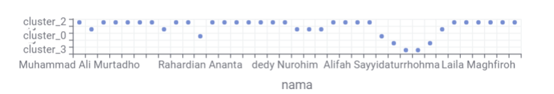
plot K=6
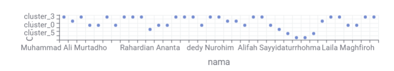
plot K=7
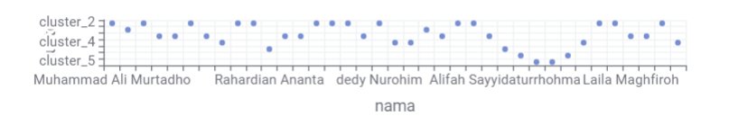
Berdasarkan nilai Overall Mean Silhouette, K = 2 dipilih sebagai jumlah cluster terbaik karena menghasilkan nilai silhouette tertinggi sebesar 0,822. Nilai tersebut menunjukkan bahwa pembagian data menjadi 2 cluster memberikan pemisahan cluster yang paling baik dibandingkan K lainnya.
2. Polynomial#
Jumlah Cluster (K) |
Overall Mean Silhouette (polynomial) |
|---|---|
2 |
0,634 |
3 |
0,471 |
4 |
0,466 |
5 |
0,486 |
6 |
0,554 |
7 |
0,537 |
plot K=2
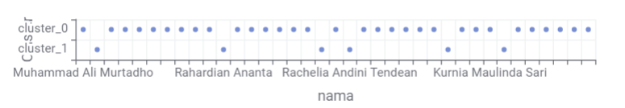
plot K=3
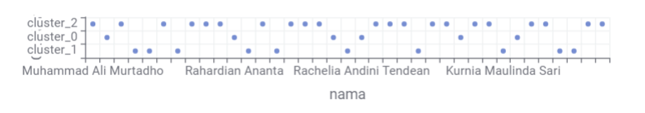
plot K=4
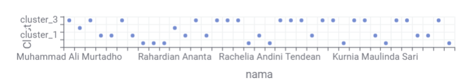
plot K=5
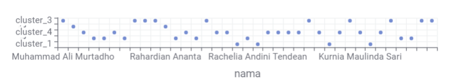
plot K=6
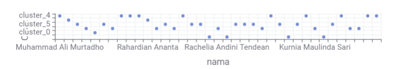
plot K=7
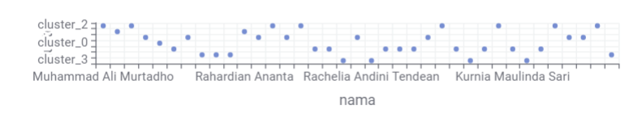
K terbaik = 2, dengan Overall Mean Silhouette = 0,634.
Artinya, berdasarkan nilai silhouette, pembagian data menjadi 2 cluster memberikan kualitas pemisahan cluster paling baik dibandingkan K lainnya.
Kalau dibandingkan dengan tabel linear sebelumnya, linear K=2 (0,822) juga lebih baik daripada polynomial K=2 (0,634).
Implementasi padad peta#
1. Menentukan koordinat setiap daerah#
koordinat = {
"Baron Nganjuk": (-7.6100, 111.9000),
"Nunukan": (4.1367, 117.6667),
"Sreseh, Sampang": (-7.1150, 113.1050),
"Manyar, Gresik": (-7.1200, 112.6500),
"Kamal, Bangkalan": (-7.1670, 112.7330),
"Kedungpring Lamongan": (-7.1600, 112.0700),
"Gresik Kota, Gresik": (-7.1550, 112.6560),
"Waru, Pamekasan": (-7.1050, 113.5400),
"Paciran, Lamongan": (-6.8760, 112.3760),
"Kertosono, Nganjuk": (-7.5900, 112.1000),
"Jabon , Sidoarjo": (-7.5500, 112.7100),
"Menganti, Gresik": (-7.2500, 112.6000),
"Banyu Ajuh, Perumnas, Kamal": (-7.1650, 112.7300),
"Bandung - Jogoroto, Jombang": (-7.5800, 112.2800),
"Widang, Tuban": (-6.9700, 112.0800),
"Sidoarjo, Wonoayu": (-7.4500, 112.6500),
"Kwanyar, Bangkalan": (-7.1700, 112.8500),
"sambeng, lamongan": (-7.2900, 112.1200),
"Kec. Kalianget, Sumenep": (-7.0550, 113.9500),
"Cerme, Gresik": (-7.2300, 112.6200),
"Tikala, Manado": (1.4748, 124.8421),
"Kerek, Tuban": (-6.9000, 111.9800),
"Kwanyar, Bangkalan": (-7.1700, 112.8500),
"Wonokromo, Surabaya": (-7.3050, 112.7350),
"Asemrowo, Surabaya": (-7.2350, 112.6950),
"Kota Sumenep, Sumenep": (-7.0100, 113.8600),
"Socah, Bangkalan": (-7.0800, 112.7800),
"Pilangkenceng, Madiun": (-7.6100, 111.6500),
"Tanah Merah, Bangkalan": (-7.0500, 113.0000),
"Labang, Bangkalan": (-7.1500, 112.8000),
"Widodaren, Ngawi": (-7.4300, 111.2500),
"Bangkalan, Bangkalan": (-7.0300, 112.7500),
"Warudoyong, Kota Sukabumi": (-6.9300, 106.9200),
"Kamal, Bangkalan": (-7.1670, 112.7330),
"Banyuajuh kamal, Bangkalan": (-7.1650, 112.7300),
"Dukun, Gresik": (-7.0500, 112.4800),
"Kecamatan Bangkalan,Bangkalan": (-7.0300, 112.7500)
}
2. Menambahkan Latitude dan Longtitude#
import pandas as pd
df = pd.read_csv("../data/csv/hail_clustering_polynomial.csv")
df["Latitude"] = df["daerah"].map(
lambda x: koordinat.get(x, (None, None))[0]
)
df["Longitude"] = df["daerah"].map(
lambda x: koordinat.get(x, (None, None))[1]
)
df[["nama", "daerah", "Latitude", "Longitude", "Cluster"]]
| nama | daerah | Latitude | Longitude | Cluster | |
|---|---|---|---|---|---|
| 0 | Muhammad Ali Murtadho | Baron Nganjuk | -7.6100 | 111.9000 | cluster_0 |
| 1 | Ainur Raftuzzaki | Nunukan | 4.1367 | 117.6667 | cluster_1 |
| 2 | M. Hendrik Purwanto | Sreseh, Sampang | -7.1150 | 113.1050 | cluster_0 |
| 3 | Okan Syailendra wahyudi | Manyar, Gresik | -7.1200 | 112.6500 | cluster_0 |
| 4 | Muhammad Zaidan Nabil Rafi | Kamal, Bangkalan | -7.1670 | 112.7330 | cluster_0 |
| 5 | Triswanti Jannatul Ma'wa | Kedungpring Lamongan | -7.1600 | 112.0700 | cluster_0 |
| 6 | Ahmad Syahrul Farihin | Gresik Kota, Gresik | -7.1550 | 112.6560 | cluster_0 |
| 7 | Rian Renaldy | Waru, Pamekasan | -7.1050 | 113.5400 | cluster_0 |
| 8 | Ahmad Dafi Zidni Alfarisi | Paciran, Lamongan | -6.8760 | 112.3760 | cluster_0 |
| 9 | AHMAD MAULANA ISHAQ | Kertosono, Nganjuk | -7.5900 | 112.1000 | cluster_0 |
| 10 | Rahardian Ananta | Jabon, Sidoarjo | NaN | NaN | cluster_1 |
| 11 | Verdi Setyawan Ardiansyah Putra | Menganti, Gresik | -7.2500 | 112.6000 | cluster_0 |
| 12 | Muhammad Isa | Bandung - Jogoroto, Jombang | -7.5800 | 112.2800 | cluster_0 |
| 13 | A.Choiril Anwar El-Asfihani Risydan | Banyu Ajuh, Perumnas, Kamal | -7.1650 | 112.7300 | cluster_0 |
| 14 | Mochammad Zaenal Abidin | Widang, Tuban | -6.9700 | 112.0800 | cluster_0 |
| 15 | M. Fatihul Umam | Kwanyar, Bangkalan | -7.1700 | 112.8500 | cluster_0 |
| 16 | Dedy Nurohim | sambeng, lamongan | -7.2900 | 112.1200 | cluster_0 |
| 17 | Marshella Aulia Putri | Kec. Kalianget, Sumenep | -7.0550 | 113.9500 | cluster_1 |
| 18 | Robbaniyah Umdatun Ni'mah | Cerme, Gresik | -7.2300 | 112.6200 | cluster_0 |
| 19 | Rachelia Andini Tendean | Tikala, Manado | 1.4748 | 124.8421 | cluster_1 |
| 20 | Nurhabibatul Umah | Kerek, Tuban | -6.9000 | 111.9800 | cluster_0 |
| 21 | Fahdimas akmal | Kwanyar, Bangkalan | -7.1700 | 112.8500 | cluster_0 |
| 22 | Muhammad izzul Millah Aqil | Wonokromo, Surabaya | -7.3050 | 112.7350 | cluster_0 |
| 23 | Riska Nana Nuril Fadilah | Asemrowo, Surabaya | -7.2350 | 112.6950 | cluster_0 |
| 24 | Alifah Sayyidaturrhohma | Kota Sumenep, Sumenep | -7.0100 | 113.8600 | cluster_0 |
| 25 | Lailatul Hasanah | Socah, Bangkalan | -7.0800 | 112.7800 | cluster_0 |
| 26 | Magdalena Jovita Hatuopar | Pilangkenceng, Madiun | -7.6100 | 111.6500 | cluster_1 |
| 27 | Mohammad Aziz Huzaini | Tanah Merah, Bangkalan | -7.0500 | 113.0000 | cluster_0 |
| 28 | Alghifari Amar Mukhasyafah | Sidoarjo, Wonoayu | -7.4500 | 112.6500 | cluster_0 |
| 29 | Kurnia Maulinda Sari | Labang, Bangkalan | -7.1500 | 112.8000 | cluster_0 |
| 30 | Deo Candra Saputra | Widodaren, Ngawi | -7.4300 | 111.2500 | cluster_1 |
| 31 | Rifqi Fairurrafi | Bangkalan, Bangkalan | -7.0300 | 112.7500 | cluster_0 |
| 32 | Fathan Ruhul Alam | Warudoyong, Kota Sukabumi | -6.9300 | 106.9200 | cluster_0 |
| 33 | Laila Maghfiroh | Kamal, Bangkalan | -7.1670 | 112.7330 | cluster_0 |
| 34 | Dewi Geizya | Banyuajuh kamal, Bangkalan | -7.1650 | 112.7300 | cluster_0 |
| 35 | Fathul Aziz Saifuddin | Dukun, Gresik | -7.0500 | 112.4800 | cluster_0 |
| 36 | Moh Rafie Nazar J | Kecamatan Bangkalan,Bangkalan | -7.0300 | 112.7500 | cluster_0 |
df.to_csv(
"hasil_clustering_dengan_koordinat_ply.csv",
index=False
)
print("CSV berhasil dibuat!")
CSV berhasil dibuat!
import pandas as pd
df = pd.read_csv("../data/features/hasil_clustering_dengan_koordinat_ply.csv")
df.head()
| nama | daerah | PCA dimension 0 | PCA dimension 1 | PCA dimension 2 | PCA dimension 3 | PCA dimension 4 | PCA dimension 5 | PCA dimension 6 | PCA dimension 7 | ... | PCA dimension 67 | PCA dimension 68 | PCA dimension 69 | PCA dimension 70 | PCA dimension 71 | PCA dimension 72 | PCA dimension 73 | Cluster | Latitude | Longitude | |
|---|---|---|---|---|---|---|---|---|---|---|---|---|---|---|---|---|---|---|---|---|---|
| 0 | Muhammad Ali Murtadho | Baron Nganjuk | 2294.166864 | -1602.978354 | -78.522721 | -22.789217 | -35.370285 | 30.178629 | -29.252592 | -35.409878 | ... | 2.930000e-14 | -2.930000e-14 | 1.150000e-14 | -1.500000e-15 | 1.530000e-14 | 3.260000e-14 | -2.300000e-15 | cluster_0 | -7.6100 | 111.9000 |
| 1 | Ainur Raftuzzaki | Nunukan | 59594.951051 | 6515.278554 | 671.013870 | 113.900659 | 73.248103 | -4.199786 | -24.346138 | -14.991320 | ... | -8.600000e-15 | -9.000000e-15 | 4.600000e-15 | 1.440000e-14 | 3.000000e-15 | -7.600000e-15 | -2.400000e-15 | cluster_1 | 4.1367 | 117.6667 |
| 2 | M. Hendrik Purwanto | Sreseh, Sampang | -2487.552051 | -616.151746 | -129.483555 | 46.455684 | 31.736327 | -46.135568 | -36.802304 | 13.124407 | ... | 1.400000e-15 | -2.690000e-14 | -1.300000e-15 | -5.800000e-15 | 7.700000e-15 | 1.200000e-14 | -5.300000e-15 | cluster_0 | -7.1150 | 113.1050 |
| 3 | Okan Syailendra wahyudi | Manyar, Gresik | -23190.753929 | -3314.410000 | 111.300399 | -85.037951 | -32.728011 | 17.449594 | -2.614118 | 1.872197 | ... | 3.920000e-14 | -7.000000e-16 | -1.730000e-14 | -2.400000e-15 | -3.500000e-15 | 2.000000e-15 | -1.110000e-14 | cluster_0 | -7.1200 | 112.6500 |
| 4 | Muhammad Zaidan Nabil Rafi | Kamal, Bangkalan | -33836.751314 | 44890.472057 | -80.220687 | -9.116511 | 3.519802 | 0.356459 | 2.151373 | -0.750520 | ... | 5.500000e-15 | -1.350000e-14 | -1.200000e-15 | -1.000000e-16 | 7.000000e-16 | 1.400000e-15 | -3.000000e-16 | cluster_0 | -7.1670 | 112.7330 |
5 rows × 79 columns
print(df[["daerah", "Cluster", "Latitude", "Longitude"]])
daerah Cluster Latitude Longitude
0 Baron Nganjuk cluster_0 -7.6100 111.9000
1 Nunukan cluster_1 4.1367 117.6667
2 Sreseh, Sampang cluster_0 -7.1150 113.1050
3 Manyar, Gresik cluster_0 -7.1200 112.6500
4 Kamal, Bangkalan cluster_0 -7.1670 112.7330
5 Kedungpring Lamongan cluster_0 -7.1600 112.0700
6 Gresik Kota, Gresik cluster_0 -7.1550 112.6560
7 Waru, Pamekasan cluster_0 -7.1050 113.5400
8 Paciran, Lamongan cluster_0 -6.8760 112.3760
9 Kertosono, Nganjuk cluster_0 -7.5900 112.1000
10 Jabon, Sidoarjo cluster_1 NaN NaN
11 Menganti, Gresik cluster_0 -7.2500 112.6000
12 Bandung - Jogoroto, Jombang cluster_0 -7.5800 112.2800
13 Banyu Ajuh, Perumnas, Kamal cluster_0 -7.1650 112.7300
14 Widang, Tuban cluster_0 -6.9700 112.0800
15 Kwanyar, Bangkalan cluster_0 -7.1700 112.8500
16 sambeng, lamongan cluster_0 -7.2900 112.1200
17 Kec. Kalianget, Sumenep cluster_1 -7.0550 113.9500
18 Cerme, Gresik cluster_0 -7.2300 112.6200
19 Tikala, Manado cluster_1 1.4748 124.8421
20 Kerek, Tuban cluster_0 -6.9000 111.9800
21 Kwanyar, Bangkalan cluster_0 -7.1700 112.8500
22 Wonokromo, Surabaya cluster_0 -7.3050 112.7350
23 Asemrowo, Surabaya cluster_0 -7.2350 112.6950
24 Kota Sumenep, Sumenep cluster_0 -7.0100 113.8600
25 Socah, Bangkalan cluster_0 -7.0800 112.7800
26 Pilangkenceng, Madiun cluster_1 -7.6100 111.6500
27 Tanah Merah, Bangkalan cluster_0 -7.0500 113.0000
28 Sidoarjo, Wonoayu cluster_0 -7.4500 112.6500
29 Labang, Bangkalan cluster_0 -7.1500 112.8000
30 Widodaren, Ngawi cluster_1 -7.4300 111.2500
31 Bangkalan, Bangkalan cluster_0 -7.0300 112.7500
32 Warudoyong, Kota Sukabumi cluster_0 -6.9300 106.9200
33 Kamal, Bangkalan cluster_0 -7.1670 112.7330
34 Banyuajuh kamal, Bangkalan cluster_0 -7.1650 112.7300
35 Dukun, Gresik cluster_0 -7.0500 112.4800
36 Kecamatan Bangkalan,Bangkalan cluster_0 -7.0300 112.7500
import pandas as pd
import folium
from folium.plugins import Fullscreen
df = pd.read_csv("../data/features/hasil_clustering_dengan_koordinat_ply.csv")
df.head()
print(df.columns)
print(df["Cluster"].unique())
Index(['nama', 'daerah', 'PCA dimension 0', 'PCA dimension 1',
'PCA dimension 2', 'PCA dimension 3', 'PCA dimension 4',
'PCA dimension 5', 'PCA dimension 6', 'PCA dimension 7',
'PCA dimension 8', 'PCA dimension 9', 'PCA dimension 10',
'PCA dimension 11', 'PCA dimension 12', 'PCA dimension 13',
'PCA dimension 14', 'PCA dimension 15', 'PCA dimension 16',
'PCA dimension 17', 'PCA dimension 18', 'PCA dimension 19',
'PCA dimension 20', 'PCA dimension 21', 'PCA dimension 22',
'PCA dimension 23', 'PCA dimension 24', 'PCA dimension 25',
'PCA dimension 26', 'PCA dimension 27', 'PCA dimension 28',
'PCA dimension 29', 'PCA dimension 30', 'PCA dimension 31',
'PCA dimension 32', 'PCA dimension 33', 'PCA dimension 34',
'PCA dimension 35', 'PCA dimension 36', 'PCA dimension 37',
'PCA dimension 38', 'PCA dimension 39', 'PCA dimension 40',
'PCA dimension 41', 'PCA dimension 42', 'PCA dimension 43',
'PCA dimension 44', 'PCA dimension 45', 'PCA dimension 46',
'PCA dimension 47', 'PCA dimension 48', 'PCA dimension 49',
'PCA dimension 50', 'PCA dimension 51', 'PCA dimension 52',
'PCA dimension 53', 'PCA dimension 54', 'PCA dimension 55',
'PCA dimension 56', 'PCA dimension 57', 'PCA dimension 58',
'PCA dimension 59', 'PCA dimension 60', 'PCA dimension 61',
'PCA dimension 62', 'PCA dimension 63', 'PCA dimension 64',
'PCA dimension 65', 'PCA dimension 66', 'PCA dimension 67',
'PCA dimension 68', 'PCA dimension 69', 'PCA dimension 70',
'PCA dimension 71', 'PCA dimension 72', 'PCA dimension 73', 'Cluster',
'Latitude', 'Longitude'],
dtype='object')
['cluster_0' 'cluster_1']
print(df[["nama", "daerah", "Cluster", "Latitude", "Longitude"]].head(10))
print(df[["Latitude", "Longitude"]].isnull().sum())
nama daerah Cluster Latitude \
0 Muhammad Ali Murtadho Baron Nganjuk cluster_0 -7.6100
1 Ainur Raftuzzaki Nunukan cluster_1 4.1367
2 M. Hendrik Purwanto Sreseh, Sampang cluster_0 -7.1150
3 Okan Syailendra wahyudi Manyar, Gresik cluster_0 -7.1200
4 Muhammad Zaidan Nabil Rafi Kamal, Bangkalan cluster_0 -7.1670
5 Triswanti Jannatul Ma'wa Kedungpring Lamongan cluster_0 -7.1600
6 Ahmad Syahrul Farihin Gresik Kota, Gresik cluster_0 -7.1550
7 Rian Renaldy Waru, Pamekasan cluster_0 -7.1050
8 Ahmad Dafi Zidni Alfarisi Paciran, Lamongan cluster_0 -6.8760
9 AHMAD MAULANA ISHAQ Kertosono, Nganjuk cluster_0 -7.5900
Longitude
0 111.9000
1 117.6667
2 113.1050
3 112.6500
4 112.7330
5 112.0700
6 112.6560
7 113.5400
8 112.3760
9 112.1000
Latitude 1
Longitude 1
dtype: int64
# Membuat peta Indonesia
m = folium.Map(
location=[-2.5, 118],
zoom_start=5,
tiles="OpenStreetMap"
)
# Google Satellite Hybrid
folium.TileLayer(
tiles="https://mt1.google.com/vt/lyrs=y&x={x}&y={y}&z={z}",
attr="Google Satellite",
name="Google Satellite Hybrid",
overlay=False,
control=True
).add_to(m)
# Warna cluster
warna_cluster = {
"cluster_0": "green",
"cluster_1": "red"
}
# Membuat layer cluster
layer_cluster = {}
for cluster in sorted(df["Cluster"].unique()):
layer_cluster[cluster] = folium.FeatureGroup(
name=f"Cluster {cluster.replace('_', ' ').title()}"
)
layer_cluster[cluster].add_to(m)
df_peta = df.dropna(
subset=["Latitude", "Longitude"]
).copy()
print("Total data:", len(df))
print("Data yang bisa dipetakan:", len(df_peta))
print("Data tanpa koordinat:", len(df) - len(df_peta))
# Menambahkan titik
for _, row in df_peta.iterrows():
cluster = row["Cluster"]
folium.CircleMarker(
location=[
row["Latitude"],
row["Longitude"]
],
radius=8,
color=warna_cluster[cluster],
fill=True,
fill_color=warna_cluster[cluster],
fill_opacity=0.8,
popup=folium.Popup(
f"""
<b>Nama:</b> {row['nama']}<br>
<b>Daerah:</b> {row['daerah']}<br>
<b>Cluster:</b> {cluster}
""",
max_width=300
)
).add_to(layer_cluster[cluster])
# Layer control
folium.LayerControl(
collapsed=False
).add_to(m)
# Fullscreen
Fullscreen().add_to(m)
# Tampilkan peta
m
m.save("peta_clustering_ply.html")
Total data: 37
Data yang bisa dipetakan: 36
Data tanpa koordinat: 1
3. Hasil Peta#
Linear
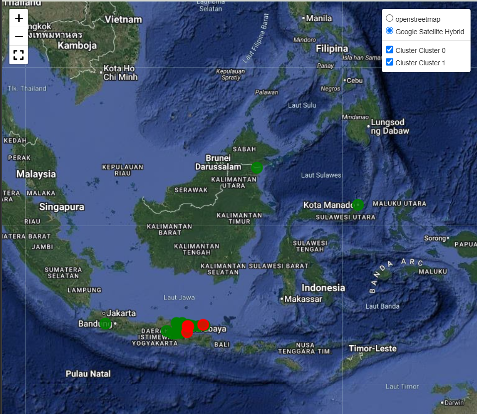
Polynomial
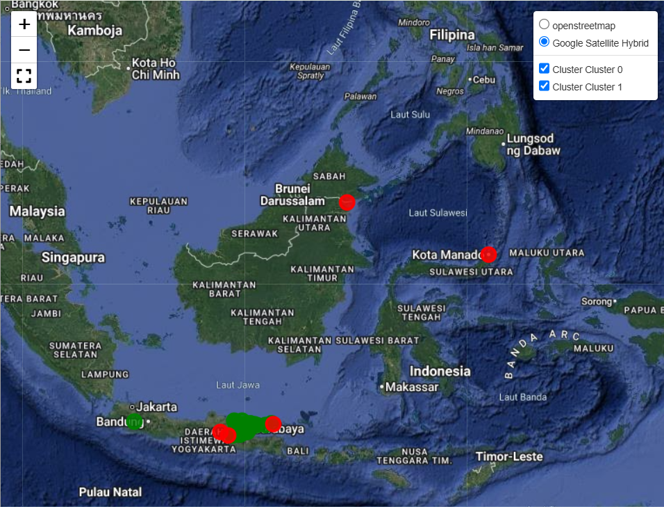